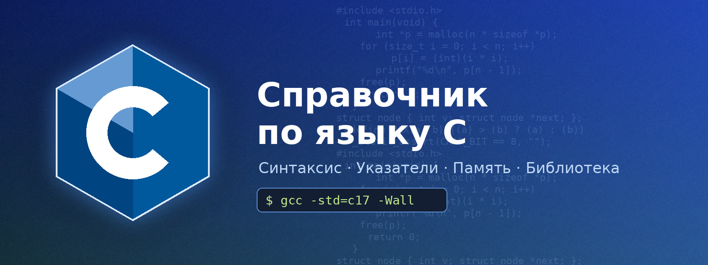

Справочник по языку C
Краткий практический справочник по языку программирования C по стандартам C11 и C17.
Каждый пример на сайте — законченный фрагмент, который компилируется командой
gcc -std=c17 -Wall -Wextra без предупреждений.
Что такое C
C — компилируемый язык общего назначения, созданный Деннисом Ритчи в Bell Labs в 1972 году для написания операционной системы UNIX. Он даёт прямой доступ к памяти через указатели, почти не имеет скрытых затрат во время выполнения и поэтому до сих пор используется в ядрах ОС, встраиваемых системах, драйверах, интерпретаторах и базах данных.
| Стандарт | Год | Главные нововведения |
|---|---|---|
| K&R C | 1978 | Язык из книги «The C Programming Language» |
| C89 / C90 | 1989–1990 | Первый стандарт ANSI/ISO, прототипы функций |
| C99 | 1999 | //-комментарии, <stdint.h>, _Bool, VLA, объявления в for |
| C11 | 2011 | _Generic, _Static_assert, <threads.h>, атомарные типы, анонимные структуры |
| C17 | 2018 | Исправления ошибок C11 без новых возможностей |
| C23 | 2024 | nullptr, constexpr, bool как ключевое слово, typeof |
Первая программа
#include <stdio.h>
int main(void)
{
printf("Привет, мир!\n");
return 0;
}Разделы справочника
О сайте
Сайт сделан как индивидуальный проект к лабораторной работе 2.1 «Настройка CDN для статического веб-сайта».
Это набор однотипных HTML-страниц с общей таблицей стилей style.css, локальным подсветчиком
синтаксиса (Prism, лицензия MIT) и локальным шрифтом JetBrains Mono
(SIL Open Font License). Внешних CDN-зависимостей нет, поэтому весь
трафик идёт с Origin-сервера и удобно анализируется в Cloudflare: HTML-страницы дают высокий Cache Hit Ratio,
а шрифты, CSS и JS подходят для долгого TTL.